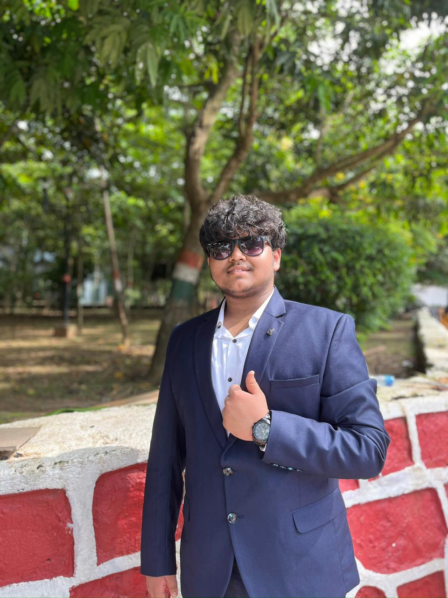

Computer Science undergraduate focused on Java and Data Structures & Algorithms. Currently building strong problem-solving fundamentals through consistent LeetCode practice and backend development projects. Seeking internship opportunities to apply and expand software engineering skills.
Gold Medalist – 4×50m Freestyle Relay & 4×50m Medley Relay
CBSE National Swimming Championship, Sub-Junior Category | 2017 & 2018
Won both relay events in consecutive years
Set a new meet record in relay category